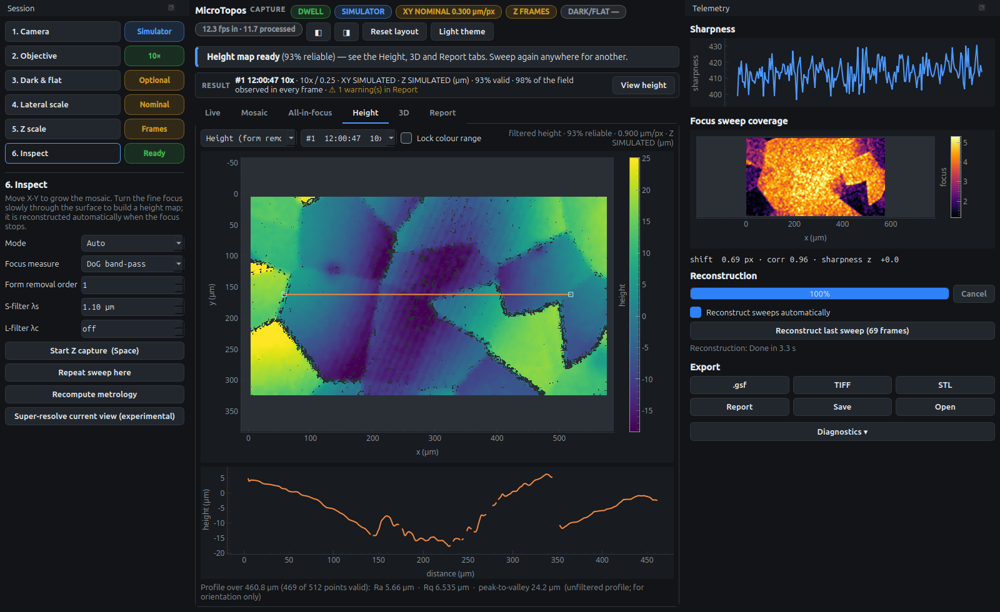
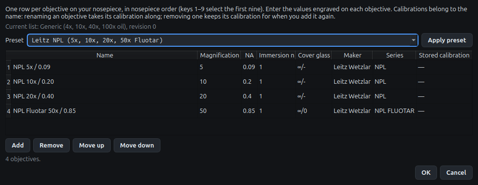
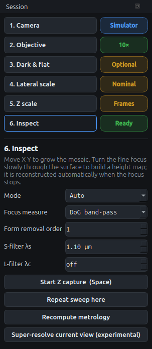
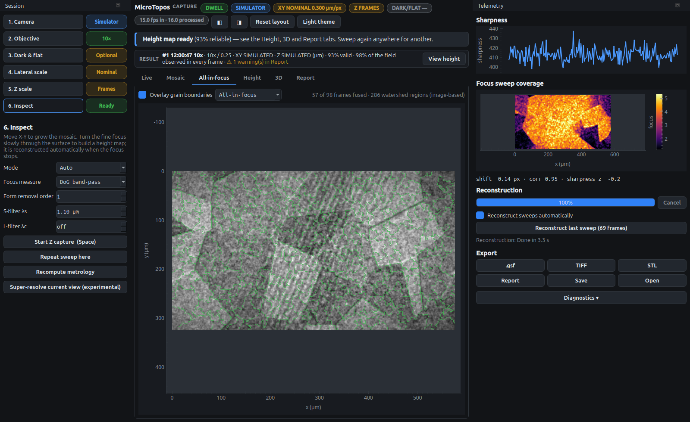
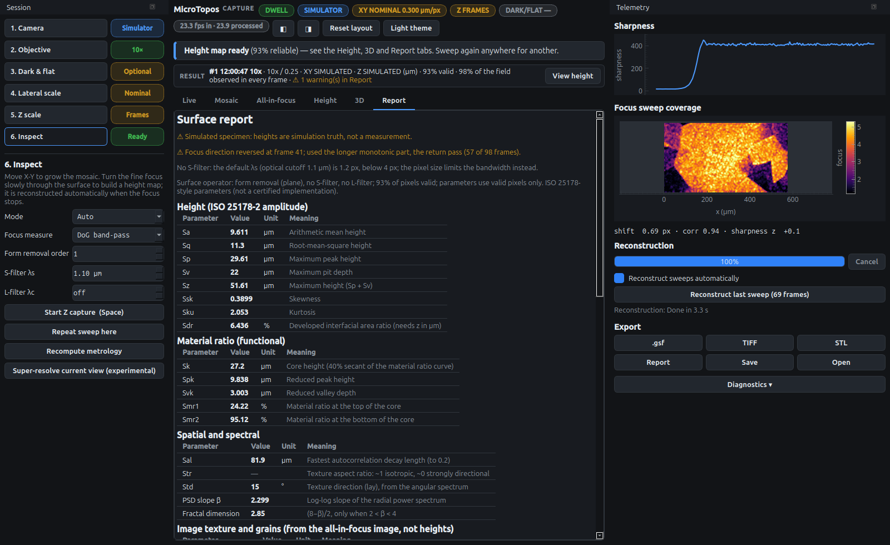
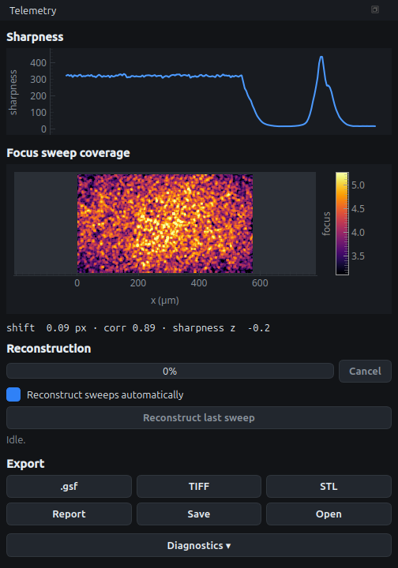

Manual
This is the reference for every control. For a guided introduction, see the quick start and the tutorials.
Header, coach line and result line
The header row describes the live capture: the camera or replay, the motion state, and the calibration of the objective selected now. The result line below the coach describes the selected height map: its own objective, X-Y and Z status, valid area and warnings. The two can differ, for example when you look at a 40× result while the 10× objective is in use. Each result keeps its own provenance.
The header chips summarise the capture at a glance:
| Chip | Meaning |
|---|---|
|
the motion state detected from the video: still, stage moving, focus moving, or the view changed abruptly |
|
raw camera frames are being recorded |
source |
the camera, the recording being replayed, or |
|
lateral scale in µm per pixel and whether it is NOMINAL or CALIBRATED |
|
what new sweeps will get: |
|
radiometric correction state for the current setting |
|
more than 1 % of the pixels are saturated |
fps |
frames per second received from the camera and processed |
◧ ◨ |
show or hide the checklist and telemetry panels; Reset layout restores them |
The result line shows the selected map’s label, objective, XY status, Z status (CALIBRATED, ESTIMATED, NOMINAL or SIMULATED, with the unit and whether the sweep direction is known), the valid fraction and the number of warnings. Set Z… states the knob travel and direction of that sweep; View height opens the Height tab. The window fits 1280×720 with both panels; hide them for a bigger image.
The coach line under the header always describes the current situation and the next useful action. It changes with the state, for example during a sweep, after an ignored sweep, when tracking is lost or when you pan too fast. If you are unsure what to do, read it first.
The motion state is detected automatically. Every feature is compared with its own noise level measured while the view was still, so the detection adapts to the scene, objective and exposure. Hysteresis keeps a short wobble from starting a sweep or a pan.
The checklist (left)
Each step has a status chip; click a step to open its settings.
1. Camera

- Source
-
a camera, Simulator (synthetic specimen), or a recording given with
--replay. A microscope camera is preferred over a laptop webcam at start-up. - Capture size
-
1920×1080 or 1280×720. Both have the same field of view; Z-stacks use the full capture size, and live analysis uses a 640 px preview.
- Automatic exposure
-
off by default and for all measurements.
- Exposure slider
-
manual exposure in milliseconds. It applies while you drag, and its range is the one the camera reports. Set once adjusts it until the brightest areas are just below saturation, then keeps it locked.
- View rotation
-
rotates the 2D views (Live, Mosaic, All-in-focus, Height, coverage) for a camera that sits rotated in the eyepiece. Measure from X pan sets it from a movement of the X knob alone. Display only: see rotating the views.
- Linearise gamma
-
converts the camera’s gamma-encoded output to linear luminance before analysis. Off: Rec.601 luma of the camera’s output.
- Device reports
-
the values the camera actually accepted, read back after setting them.
- Demo
-
simulator only: Pan around, Focus sweep, Sweep + reversal.
MicroTopos sets the camera after the stream has started and again after a reconnect, because many cameras ignore settings made earlier. On Linux it switches off automatic exposure, in-camera sharpening and backlight compensation. When the camera has them, it also locks automatic white balance, automatic gain and the dynamic frame rate.
2. Objective
Choose the objective in use. Keys 1 to 9 select the objectives in list order; the step’s title shows how many keys are in use. The numerical aperture sets the focus window size, the depth of field used by the reconstruction, and the default roughness S-filter (λs). Change it whenever you turn the nosepiece. A detected objective change asks you to confirm and suggests the objective whose magnification best fits the change of texture scale.
The list starts with four generic objectives (4×/0.10, 10×/0.25, 40×/0.85, 100×/1.25 oil). Replace it with the objectives on your nosepiece: click Edit objectives….

Enter one row per objective, in nosepiece order, with the values engraved on it: magnification, numerical aperture (NA), the immersion index n (1 for a dry objective, about 1.515 for oil) and the cover-glass note (0.17 for a 0.17 mm cover glass, 0 or ∞/0 for uncovered specimens, - for either). Maker and series are optional. Apply preset fills the table with a known set, for example Leitz NPL (5x, 10x, 20x, 50x Fluotar): NPL 5×/0.09, 10×/0.20 and 20×/0.40 (∞/-) and NPL Fluotar 50×/0.85 (∞/0), all dry. OK stays disabled while a value is impossible: an NA of 0 or less, an NA above the immersion index (a dry objective cannot exceed NA 1), a magnification out of range, or two objectives with the same name.
The list is saved as objectives.json next to calibration.json in the data folder, with its origin (preset or edited), date and revision. Calibrations belong to the objective’s name:
-
Renaming an objective takes its calibration along. A rename onto a name that already holds a calibration is refused.
-
Removing an objective keeps its calibration; it comes back when you add an objective with the same name again.
-
Changing an objective’s magnification clears its lateral scale, because the stage-micrometer value belonged to the old nameplate. Dark and flat frames and the Z estimate are kept.
Results and sessions record the optics of the objective they were made with, so editing the list never changes an existing result. Sessions from older versions that name a built-in objective still open after you replace the list.
|
Important
|
The nameplate magnification does not give the true pixel size. The camera’s sensor pitch and any relay lens between the eyepiece tube and the sensor are unknown, so calibrate the lateral scale once per objective with a stage micrometer (step 4). Until then lengths are nominal. |
3. Dark & flat
Records averaged dark and flat frames for the current objective, capture size and exposure. See calibration.
4. Lateral scale
Calibrates µm per pixel with the blue line on a stage micrometer. See calibration.
5. Z scale
- Sweep direction
-
Up, Down or Unknown, for new sweeps. Unknown keeps the relief’s sign undetermined, and results say so.
- Set Z of the selected result…
-
knob travel (µm) and direction of that sweep; calibrates that result only. It can also keep the µm-per-frame value as an estimate for later sweeps with the same objective.
- DOF ruler (experimental)
-
stores a model estimate of µm per frame.
See calibration for what each status means.
6. Inspect

- Mode
-
Auto detects pans and sweeps; Pan and Z capture force a state; Pause stops detection.
- Focus measure
-
DoG band-pass (default, robust to noise); Tenengrad, SML, Vollath F4 and F5 for comparison.
- Form removal order
-
polynomial removed before roughness: 0 = mean only, 1 = plane (tilt), 2 = quadratic, 3 = cubic.
- S-filter λs / L-filter λc
-
the ISO 16610-61 Gaussian filter cut-offs in µm. The S-filter removes noise below λs; the optional L-filter removes waviness above λc. A cut-off shorter than 4 pixels is not applied, and the report says so.
- Start Z capture
-
(Space) starts and stops a manual sweep capture.
- Repeat sweep here
-
the next sweep at the same place is compared with the last for repeatability, σinst.
- Recompute metrology
-
recomputes the report with the current filter settings without a new sweep (in the background).
- Super-resolve current view
-
experimental: drizzles still frames with sub-pixel shifts onto a 2× finer grid (4× the pixels). Frames that do not register reliably are left out. It refuses when the frames have too little sub-pixel motion between them to add information.
The views (middle)
The tool bar of each view sits above the image. Every 2D view has µm axes; hover for the value under the cursor, scroll to zoom, drag to pan, and click the small A button in the corner (or right-click › View All) to show everything again.
- Live
-
the camera preview. Outline in-focus regions marks the areas that are currently at their sharpest during a sweep. Show clipped pixels stripes saturated areas in magenta. Record raw stream saves every frame for replay with
--replay: the camera’s exact MJPEG bytes, or lossless PNG when the camera only delivers decoded frames. A full disk or a write error stops the recording with a message. - Mosaic
-
the stitched map, with the camera box. Image, Image + height overlay or Height only; opacity slider; Export height mosaic; Reset mosaic (R). Height maps are only levelled and blended with maps of the same quantity: calibrated µm with calibrated µm. A map in relative frames, or with an unknown direction, keeps its own colour scale and is never blended. The legend says how many groups there are. A height map that finishes after the mosaic was reset is not pinned into the new mosaic. Very large mosaics are drawn at a reduced scale, which the status line shows.
- All-in-focus
-
the extended-depth-of-field image at full resolution; Overlay grain boundaries.
- Height
-
filtered height, raw height or confidence; history of the last 10 maps; Lock colour range keeps one scale while you compare maps; profile line and plot. The profile values are unfiltered and labelled with their unit; in the confidence view the line shows confidence only.
- 3D
-
the surface in perspective; Z exaggeration (shown on the status line) and colour map (viridis, cividis, inferno, plasma, magma, turbo). Pixels without a depth are holes, not a flat fill. The view is kept when you change the colours.
- Report
-
what the numbers are first (calibration and direction status, warnings, the surface operator), then height, material-ratio, spatial, repeatability and image-based groups. A withheld value says why. Provenance comes last (F1 opens it).


Telemetry (right)

- Sharpness
-
the image sharpness over time. A sweep shows as a rise and fall.
- Focus sweep coverage
-
per pixel, how strongly it has been in focus during the current sweep.
- Motion line
-
frame-to-frame shift in pixels, correlation and the sharpness trend as a z-score.
- Reconstruction
-
progress, Cancel, Reconstruct sweeps automatically and Reconstruct last sweep.
- Export
-
.gsf (Gwyddion), TIFF (32-bit float heights, NaN where there is no depth), STL (a visualisation mesh, not a measurement archive). Every height export writes a validity mask (
name.mask.png) and a provenance file (name.json) beside it, and a confirmation first says what will be written. Report writes a folder withreport.json,summary.csv,edf.png,confidence.pngandvalid_mask.png. The files are written complete or not at all. Save / Open session. - Diagnostics
-
the live event log, for bug reports.
Keyboard shortcuts
| Key | Action |
|---|---|
1 – 9 |
select the first, second, … objective in the objective list |
Space |
start / stop a manual Z capture |
R |
reset the mosaic |
Ctrl+S / Ctrl+O |
save / open a session |
Ctrl+E |
export the report bundle |
F1 |
open the Report tab |
Shortcuts are ignored while you type in a field.
Files and settings
-
Calibrations (
calibration.jsonand dark/flat frames) are kept in the program’s data folder, for example~/.local/share/MicroTopos/MicroToposon Linux. On Windows the folder is under%APPDATA%, and on macOS under~/Library/Application Support. -
Settings (window layout, theme, exposure, view rotation, last folders) use Qt’s settings store, for example
~/.config/MicroTopos/MicroTopos.confon Linux. -
Recordings go to a new folder under
recordingsin the current directory. Each frame is listed inframes.jsonwith its sequence number, time, size and checksum. The manifest is kept up to date while recording, so a disconnect leaves a usable recording, marked incomplete. -
Sessions (
.npz, schema 2) contain the original arrays of the selected result (heights, raw fit, confidence, processing image, filtered surface), all report values and warnings, the settings and the mosaic. A session can also hold a mosaic alone. Opening validates the file before anything changes, and an older session is converted with a note about what had to be recomputed.